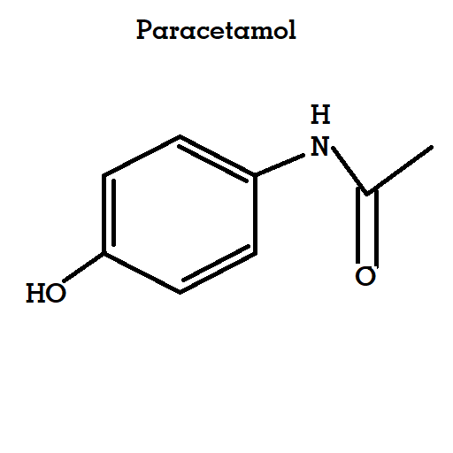

Paracetamol ,also known as Acetaminophen, is medication used to treat fever and mild to moderate pain.
Dosage Forms :oral capsule (325 mg; 500 mg); oral granule, effervescent (650 mg); oral liquid (160 mg/5 mL; 325 mg/10.15 mL; 500 mg/15 mL; 650 mg/20.3 mL); oral powder (500 mg); oral suspension (160 mg/5 mL; 650 mg/20.3 mL); oral tablet (325 mg; 500 mg); oral tablet, chewable (160 mg; 80 mg); oral tablet, disintegrating (160 mg; 325 mg; 80 mg); oral tablet, extended release (650 mg).
Dosages Varies As Per Age & symptoms found in Patient. Please Ask Your Doctor Before Taking Acetaminophen.
Acetaminophen is used to treat mild to moderate pain , moderate to severe pain in conjunction with opiates, or to reduce fever.
Common Conditions treated includes headeche , muscle aches , arthritis , backache , toothaches , colds , flu, and fevers.
 3D Model| Clinical Data | Other Names | N-acetyl-para-aminophenol(APAP) | Routes of Administration | Oral , Rectal & Intravenous(IV) | Drug Class | Analgesics & Antipyretics |
|---|
| Pharmacokinetic Data | Bioavailability | 63 - 84% |
|---|
| Protien binding | Negligible to 10-25% in overdose |
| Metabolism | Predominantly in the liver |
| Metabolites | APAP gulc , APAP sulfate , APAP GSH , APAP cys,AM404 ,NAPQI |
| Onset of action | Pain relief onset by route: By Mouth - 37 minutes Intravenous - 8 minutes |
| Elimination half-life | 1.9 - 2.5 hours |
| Excretion | Urine |
| Identifiers | |
|---|---|
| IUPAC name | N-(4-hydroxyphenyl)acetamide |
| CAS Number | 103-90-2 |
| PubChem CID | 1983 |
| PubChem SID | 46506142 |
| Chemical & Physical Data | Formula | C8H9NO2 |
|---|
| Molar Mass | 151.165 g.mol-1 |
| Density | 1.263 g/cm3 |
| Melting Point | 169 ℃ (336 ℉) |
| Solubility in Water | 7.21g/kg(0℃) 8.21g/kg(5℃) 9.44g/kg(10℃) 10.97g/kg(15℃) 12.78g/kg(20℃) ~14mg/ml(20℃) |
Acetaminophen is also available in many over-the-counter combination medications with other drugs, including Actifed, Alka-Seltzer Plus Liquid Gels, Cepacol, Contac, Coridicin, Dayquil, Dimetapp, Dristan, Excedrin, Feverall, Liquiprin, Midol, Nyquil, Panadol, Robitussin Singlet, Sinutab, Sudafed, Theraflu, Triaminic, Vanquish, Vicks, and Zicam.
Acetaminophen is also found in many prescription combination drugs, including Butalbital, Endocet, Fioricet, Hycotab, Hydrocet, Hydrocodone bitartrate, Lortab, Percocet, Phenaphen, Sedapap, Tapanol, Tylenol with codeine, Tylox, Ultracet, Vicodin, and Zydone.
Acetaminophen is typically used orally, but can be given intravenously.
Warnings
You should not use this medication if you have severe liver disease.
An overdose of acetaminophen can damage your liver.
● Adults and teenagers who weigh at least 110 pounds should not take more than 1000 milligrams (mg) at one time, or more than 4000 mg in 24 hours.
● Children younger than 12 years old should not take more than 5 doses in 24 hours, using only the Number of milligrams per dose that is recommended for child's weight & age. Use exactly as directed on the label
Avoid also using other medicines that contain acetaminophen (sometimes abbreviated as APAP), or you could have a fatal overdose.
Call your doctor at once if you have nausea, pain in your upper stomach, itching, loss of appetite, dark urine, clay-colored stools, or jaundice (yellowing of your skin or eyes).
Stop taking this medicine and call your doctor right away if you have skin redness or a rash that spreads and causes blistering and peeling.
Before taking this medicine
You should not take acetaminophen if you are allergic to it, or if you take other medications that contain acetaminophen.
Ask a doctor or pharmacist if this medicine is safe to use if you've ever had cirrhosis of the liver, or if you drink alcohol daily.
Ask a doctor before using this medicine if you are pregnant or breastfeeding.How should i take acetaminophen?
Take acetaminophen exactly as directed on the label, or as prescribed by your doctor. An overdose can damage your liver.
Do not give extra-strength acetaminophen to a child younger than than 12 years old without Doctor's Advice.
A child's dose is based on age and weight. Carefully follow the dosing instructions provided with acetaminophen. Ask a doctor before giving this medicine to a child younger than 2 years.
Acetaminophen made for infants comes with its own medicine dropper or oral syringe. Measuring with the wrong device may cause an overdose. Use only the provided dosing device provided to measure an infant's dose.
Usual Adult Dose for Fever
Doses may be given as a single or repeated dose as follows:
Parenteral:
Weight 50 kg or greater: 1000 mg IV every 6 hours OR 650 mg IV every 4 hours
Maximum Single Dose: 1000 mg
Minimum Dosing Interval: every 4 hours
Maximum Dose: 4000 mg per 24 hours
Weight less than 50 kg: 15 mg/kg IV every 6 hours OR 12.5 mg/kg IV every 4 hours
Maximum Single Dose: 15 mg/kg
Minimum Dosing Interval: every 4 hours
Maximum Dose: 75 mg/kg per 24 hours
Oral:
Immediate-release: 325 mg to 1 g orally every 4 to 6 hours
Minimum Dosing Interval: every 4 hours
Maximum Single Dose: 1000 mg
Maximum Dose: 4 g per 24 hours
Extended-Release: 1300 mg orally every 8 hours
Maximum dose: 3900 mg per 24 hours
Rectal:
650 mg rectally every 4 to 6 hours
Maximum dose: 3900 mg per 24 hours
Comments:
Maximum daily dose is based on all routes of administration and all products containing acetaminophen.
Maximum daily dose and dosing recommendations may differ by product; some manufacturers have decreased the maximum daily dose to protect consumers from inadvertent overdoses.
For IV administration, verify the dose in mg and mL to ensure the dose is correct; verify that infusion pumps are properly programmed
Uses:
For the management of mild to moderate pain and the management of moderate to severe pain with adjunctive opioid analgesics.
For the reduction of fever.
Usual Adult Dose for Pain
Doses may be given as a single or repeated dose as follows:
Parenteral:
Weight 50 kg or greater: 1000 mg IV every 6 hours OR 650 mg IV every 4 hours
Maximum Single Dose: 1000 mg
Minimum Dosing Interval: every 4 hours
Maximum Dose: 4000 mg per 24 hours
Weight less than 50 kg: 15 mg/kg IV every 6 hours OR 12.5 mg/kg IV every 4 hours
Maximum Single Dose: 15 mg/kg
Minimum Dosing Interval: every 4 hours
Maximum Dose: 75 mg/kg per 24 hours
Oral:
Immediate-release: 325 mg to 1 g orally every 4 to 6 hours
Minimum Dosing Interval: every 4 hours
Maximum Single Dose: 1000 mg
Maximum Dose: 4 g per 24 hours
Extended-Release: 1300 mg orally every 8 hours
Maximum dose: 3900 mg per 24 hours
Rectal:
650 mg rectally every 4 to 6 hours
Maximum dose: 3900 mg per 24 hours
Comments:
Maximum daily dose is based on all routes of administration and all products containing acetaminophen.
Maximum daily dose and dosing recommendations may differ by product; some manufacturers have decreased the maximum daily dose to protect consumers from inadvertent overdoses.
For IV administration, verify the dose in mg and mL to ensure the dose is correct; verify that infusion pumps are properly programmed
Uses:
For the management of mild to moderate pain and the management of moderate to severe pain with adjunctive opioid analgesics.
For the reduction of fever.
Usual Pediatric Dose for Pain
Doses may be given as a single or repeated dose as follows:
PARENTERAL:
AGE: 2 to 12 years:
Weight-based dosing: 12.5 mg/kg IV every 4 hours OR 15 mg/kg IV every 6 hours
Maximum Single Dose: 15 mg/kg; not to exceed 750 mg
Minimum Dosing Interval: every 4 hours
Maximum Daily Dose: 75 mg/kg in 24 hours; not to exceed 3750 mg
AGE: 13 years or older:
Weight less than 50 kg: 12.5 mg/kg IV every 4 hours OR 15 mg/kg IV every 6 hours
Maximum Single Dose: 15 mg/kg; not to exceed 750 mg
Minimum Dosing Interval: every 4 hours
Maximum Daily Dose: 75 mg/kg in 24 hours; not to exceed 3750 mg
Weight 50 kg or greater: 650 mg IV every 4 hours OR 1000 mg IV every 6 hours
Maximum Single Dose: 1000 mg
Minimum Dosing Interval: every 4 hours
Maximum Daily Dose: 4000 mg in 24 hours
ORAL: 10 to 15 mg/kg orally every 4 to 6 hours as needed not to exceed 5 doses in 24 hours
Alternatively, use weight first, then age:
Weight: 2.7 to 5.3 kg (0 to 3 months): 40 mg orally every 4 hours as needed not to exceed 5 doses in 24 hours
Weight: 5.4 to 8.1 kg (4 to 11 months): 80 mg orally every 4 hours as needed not to exceed 5 doses in 24 hours
Weight: 8.2 to 10.8 kg (12 to 23 months): 120 mg orally every 4 hours as needed not to exceed 5 doses in 24 hours
Weight: 10.9 to 16.3 kg (2 to 3 years): 160 mg orally every 4 hours as needed not to exceed 5 doses in 24 hours
Weight: 16.4 to 21.7 kg (4 to 5 years): 240 mg orally every 4 hours as needed not to exceed 5 doses in 24 hours
Weight: 21.8 to 27.2 kg (6 to 8 years): 320 mg orally every 4 hours as needed not to exceed 5 doses in 24 hours
Weight: 27.3 to 32.6 kg (9 to 10 years): 400 mg orally every 4 hours as needed not to exceed 5 doses in 24 hours
Weight: 32.7 to 43.2 kg (11 to 12 years): 480 mg orally every 4 hours as needed not to exceed 5 doses in 24 hours
Immediate-release: 325 mg to 1 g orally every 4 to 6 hours
Minimum Dosing Interval: every 4 hours
Maximum Single Dose: 1000 mg
Maximum Dose: 4 g per 24 hours
Extended-Release: 1300 mg orally every 8 hours
Maximum dose: 3900 mg per 24 hours
Age: 6 to 11 months: 80 mg rectally every 6 hours up to a maximum of 4 doses in 24 hours
Age: 12 to 36 months: 80 mg rectally every 4 to 6 hours up to a maximum of 5 doses in 24 hours
Age: 3 to 6 years: 120 mg rectally every 4 to 6 hours up to a maximum of 5 doses in 24 hours
Age: 6 to 12 years: 325 mg rectally every 4 to 6 hours up to a maximum of 5 doses in 24 hours
Age: 12 years or older: 650 mg rectally every 4 to 6 hours up to a maximum of 6 doses in 24 hours
Maximum daily dose is based on all routes of administration and all products containing acetaminophen.
Maximum daily dose and dosing recommendations may differ by product; some manufacturers have decreased the maximum daily dose to protect consumers from inadvertent overdoses.
For IV administration, verify the dose in mg and mL to ensure the dose is correct; verify that infusion pumps are properly programmed.
Uses:
For the management of mild to moderate pain and for the management of moderate to severe pain when used with adjunctive opioid analgesics.
Usual Pediatric Dose for Fever
Doses may be given as a single or repeated dose as follows:
PARENTERAL:
Neonates (including those premature neonates born at 32 weeks gestational age or later, up to 28 days chronological age): 12.5 mg/kg IV every 6 hours
Minimum Dosing Interval: 6 hours
Maximum Daily Dose: 50 mg/kg/day
Infants (29 days to 2 years old): 15 mg/kg every 6 hours
Minimum Dosing Interval: 6 hours
Maximum Daily Dose: 60 mg/kg/day
Age: 2 to 12 years: 12.5 mg/kg IV every 4 hours OR 15 mg/kg IV every 6 hours
Maximum Single Dose: 15 mg/kg; not to exceed 750 mg
Minimum Dosing Interval: every 4 hours
Maximum Daily Dose: 75 mg/kg in 24 hours; not to exceed 3750 mg
Age: 13 years or older; weight less than 50 kg: 12.5 mg/kg IV every 4 hours OR 15 mg/kg IV every 6 hours
Maximum Single Dose: 15 mg/kg; not to exceed 750 mg
Minimum Dosing Interval: every 4 hours
Maximum Daily Dose: 75 mg/kg in 24 hours; not to exceed 3750 mg
Age: 13 years or older; weight 50 kg or greater: 650 mg IV every 4 hours OR 1000 mg IV every 6 hours
Maximum Single Dose: 1000 mg
Minimum Dosing Interval: every 4 hours
Maximum Daily Dose: 4000 mg in 24 hours
ORAL: 10 to 15 mg/kg orally every 4 to 6 hours as needed not to exceed 5 doses in 24 hours
Alternatively, use weight first, then age:
Weight: 2.7 to 5.3 kg (0 to 3 months): 40 mg orally every 4 hours as needed not to exceed 5 doses in 24 hours
Weight: 5.4 to 8.1 kg (4 to 11 months): 80 mg orally every 4 hours as needed not to exceed 5 doses in 24 hours
Weight: 8.2 to 10.8 kg (12 to 23 months): 120 mg orally every 4 hours as needed not to exceed 5 doses in 24 hours
Weight: 10.9 to 16.3 kg (2 to 3 years): 160 mg orally every 4 hours as needed not to exceed 5 doses in 24 hours
Weight: 16.4 to 21.7 kg (4 to 5 years): 240 mg orally every 4 hours as needed not to exceed 5 doses in 24 hours
Weight: 21.8 to 27.2 kg (6 to 8 years): 320 mg orally every 4 hours as needed not to exceed 5 doses in 24 hours
Weight: 27.3 to 32.6 kg (9 to 10 years): 400 mg orally every 4 hours as needed not to exceed 5 doses in 24 hours
Weight: 32.7 to 43.2 kg (11 to 12 years): 480 mg orally every 4 hours as needed not to exceed 5 doses in 24 hours
12 years or older:
Immediate-release: 325 mg to 1 g orally every 4 to 6 hours
Minimum Dosing Interval: every 4 hours
Maximum Single Dose: 1000 mg
Maximum Dose: 4 g per 24 hours
RECTAL:
Age: 6 to 11 months: 80 mg rectally every 6 hours up to a maximum of 4 doses in 24 hours
Age: 12 to 36 months: 80 mg rectally every 4 to 6 hours up to a maximum of 5 doses in 24 hours
Age: 3 to 6 years: 120 mg rectally every 4 to 6 hours up to a maximum of 5 doses in 24 hours
Age: 6 to 12 years: 325 mg rectally every 4 to 6 hours up to a maximum of 5 doses in 24 hours
Age: 75012 years or older: 650 mg rectally every 4 to 6 hours up to a maximum of 6 doses in 24 hours
Comments:
Maximum daily dose is based on all routes of administration and all products containing acetaminophen.
Maximum daily dose and dosing recommendations may differ by product; some manufacturers have decreased the maximum daily dose to protect consumers from inadvertent overdoses.
For IV administration, verify the dose in mg and mL to ensure the dose is correct; verify that infusion pumps are properly programmed.
Use:For the reduction of fever.
Renal Dose Adjustments
Severe renal impairment (CrCl less than 30 mL/min): Use caution; longer dosing intervals and a reduced total daily dose may be warranted
Liver Dose Adjustments
Parenteral:
Severe hepatic impairment, severe active hepatic disease: Use is contraindicated
Mild to moderate hepatic impairment, mild to moderate active hepatic disease: Use with caution; a reduced total daily dose may be warranted
Over the counter products must contain labeling that states:
This product contains acetaminophen. Severe liver damage may occur if:
Adult takes more than maximum daily dose in 24 hours
Child takes more than 5 doses in 24 hours
More than 3 alcoholic drinks are consumed per day while using this product.
Dose Adjustments
Use caution in patients with alcoholism, chronic malnutrition, severe hypovolemia (e.g. due to dehydration or blood loss); A reduced daily dose may be warranted.
Suspected Overdose:
If an overdose is suspected, obtain a serum drug level as soon as possible, but no sooner than 4 hours after oral ingestion.
Liver function studies should be obtained and repeated at 24-hour intervals.
The antidote, N-acetylcysteine (NAC) should be administered as soon as possible according to NAC protocols.
Precautions
US BOXED WARNING: RISK OF MEDICATION ERRORS
Take care when prescribing, preparing, and administering IV acetaminophen injection to avoid dosing errors which could result in accidental overdose and death. In particular, be careful to ensure that
the dose in milligrams (mg) and milliliters (mL) is not confused;
the dosing is based on weight for patients under 50 kg;
infusion pumps are properly programmed;
the total daily dose of acetaminophen from all sources does not exceed maximum daily limits.
US BOXED WARNING: HEPATOTOXICITY:
This drug has been associated with cases of acute liver failure, at times resulting in liver transplant and death. Most of the cases of liver injury are associated with the use of acetaminophen at doses that exceed the maximum daily limits, and often involve more than 1 acetaminophen-containing product.
US OVER THE COUNTER LABELING: Adults only:
This product contains acetaminophen. Severe liver damage may occur if:
More than maximum daily dose is taken in 24 hours
This product is taken with other drugs containing acetaminophen
Three or more alcoholic drinks are consumer every day while using this product.
US OVER THE COUNTER LABELING: Adults and children under 12 years of age:
This product contains acetaminophen. Severe liver damage may occur if:
Adult takes more than maximum daily dose in 24 hours
Child takes more than 5 doses in 24 hours
This product is taken with other drugs containing acetaminophen
Persons consume 3 or more alcoholic drinks per day while using this product.
CONTRAINDICATIONS:
Hypersensitivity to the active substance or any product excipients
Severe hepatic impairment or severe active liver disease
Safety and efficacy for the treatment of acute pain have not been established in patients younger than 2 years; the safety and effectiveness for treatment of fever in pediatric patients, including premature neonates born at 32 weeks or later, has been demonstrated in clinical trials.
Dialysis
Children:
Intermittent hemodialysis or peritoneal dialysis: Administer every 8 hours
CRRT: No adjustments necessary
Adults:
Intermittent hemodialysis or peritoneal dialysis: No adjustment necessary
CRRT: Administer every 8 hours
Other Comments
Administration advice:
When calculating daily acetaminophen doses, be sure to account for all acetaminophen-containing products and all routes of administration; do not exceed maximum doses
Chewable tablets:
Chew tablets before swallowing
Extended-release:
Swallow whole; do not crush, chew, split, or dissolve
Oral disintegrating tablets:
Allow to dissolve in mouth or chew before swallowing
Oral suspension:
Shake well before using
Use enclosed measuring device to accurately measure dose
Parenteral:
Infuse IV over 15 minutes; ensure infusion pumps are properly programmed
Monitor end of infusion in order to prevent the possibility of an air embolism, especially in cases where this is the primary infusion.
Suppositories:
For rectal use only
Remove wrapper
Carefully insert suppository well up into the rectum
Reconstitution/preparation techniques:
For IV doses of 1000 mg: May administer without further dilution; may administer by inserting a vented IV set through the septum of the vial.
For doses less than 1000 mg: Withdraw the appropriate dose from the vial and place in a separate empty, sterile container (e.g., glass bottle, plastic IV container, or syringe) for IV infusion
Administer within 6 hours of penetrating the vacuum seal of the glass vial
Do not use if particulate matter or discoloration is observed
Do not add other medications to the acetaminophen solution
Consult manufacturer product information for additional information
IV compatibility:
Diazepam and chlorpromazine hydrochloride are physically incompatible
Storage requirements:
IV: Single use only; store at 20C to 25C (68F to 77F); do not refrigerate or freeze
General:
Drug-induced hepatotoxicity is preventable; all patients and caregivers need to be educated on how to give/take this drug safely and what to do if more than the recommended dose is consumed.
Use of more than 1 acetaminophen-containing product at one time should be discouraged.
Hypersensitivity reactions and serious rashes have been reported.
The effectiveness of IV administration for the treatment of acute pain in patients younger than 2 years has not been established.
Monitoring:
Monitor for nausea, vomiting, loss of appetite, sweating, extreme tiredness, unusual bleeding or bruising, pain in upper right part of the stomach, yellow of the skin or eyes, and/or flu-like symptoms as this may be an indication of overdose.
Monitor for skin reactions
Patient advice:
Patients should be advised to follow package directions for over the counter acetaminophen products including observing the maximum single dose and maximum daily dose limits.
Patients should be discouraged from using multiple acetaminophen containing products concurrently.
Patients should be advised that severe liver damage may occur if more than the recommended amount of this drug is taken; patients should seek medical help promptly if they suspect they have taken too much of this drug or if they experience nausea, vomiting, loss of appetite, or yellowing of the skin or eyes.
Patients should be advised to limit alcohol use while taking this drug.
What Happens if I Overdose?
Seek Emergency Medical Attention.
The first signs of an acetaminophen overdose include loss of appetite, nausea, vomiting, stomach pain, sweating, and confusion or weakness. Later symptoms may include pain in your upper stomach, dark urine, and yellowing of your skin or the whites of your eyes.
Acetaminophen side Effects
In rare cases, acetaminophen may cause a severe skin reaction that can be fatal, even if you took acetaminophen in the past and had no reaction. Stop taking this medicine and call your doctor right away if you have skin redness or a rash that spreads and causes blistering and peeling.
Stop taking acetaminophen and call your doctor, If You have sign of liver Problems Such As stomach pain(upper right side), Lose of appetite, tiredness , itching , Dark-urine, clay-colored stools , or yellowing of the skin or eyes.Less serious acetaminophen side effects may be more likely, and you may have none at all.
| Name | Brand Name | Crocin Advance | GlaxoSmithKline |
|---|---|
| Dolo 650 | Micro Labs Ltd |
| Dolo 500 | Micro Labs Ltd |
| Dolopar 650 | Micro Labs Ltd |
| Calpol 500 | GlaxoSmithKline |
| Calpol 650 | GlaxoSmithKline |
| Lanol Extended-Release(650mg) | Hetero Drugs Ltd |
| P 650 | Apex Laboratories Pvt Ltd |
| Paracip 500 | Cipla Ltd |
| Name | Brand Name | Calpol 250mg Paediatric Oral Suspension Strawberry | GlaxoSmithKline |
|---|---|
| Dolo 250 | Micro Labs Ltd |
| Calpol Paediatric Drops Peppermint | GlaxoSmithKline |
| T-98 | Mankind Pharma |
| Calpol 120mg Suspension Strawberry | GlaxoSmithKline |
| Name | Brand Name | Leemol Plus 250 | Leeford HealthCare Limited |
|---|---|
| Paracip Syrup | Cipla Ltd |